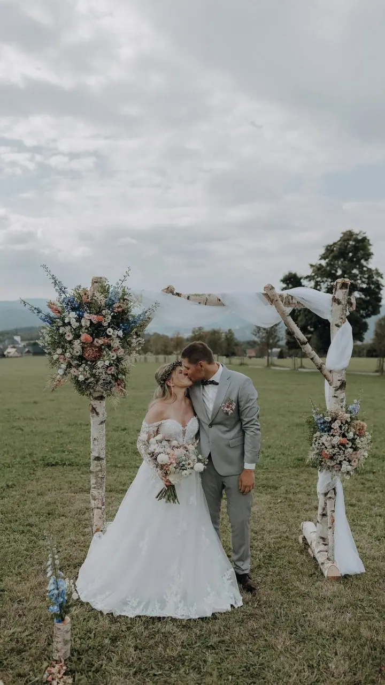
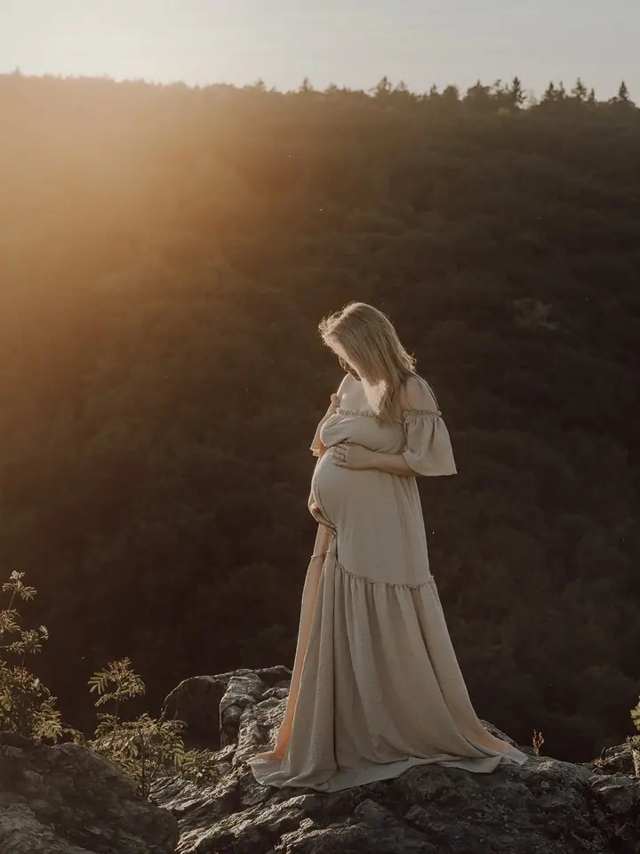
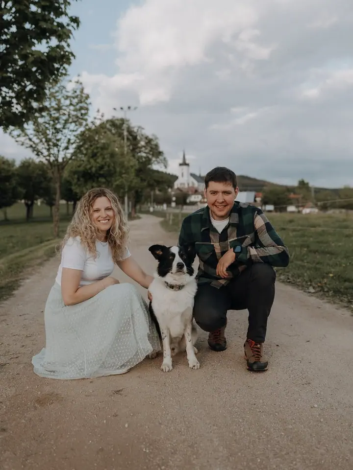

Svatby
Celý váš den od 4 hodin až po 12 hodin focení. Před svatbou se spolu sejdeme a fotky dostanete do 14 dnů.

Jmenuji se Karolína Peterková a ze všeho nejvíc mě baví zachycovat ženskost, smích a lásku. Fotím svatby, portréty, páry i rodiny v Krkonoších, v Jizerkách a vlastně kde…
Rezervovat termínJsem svatební, portrétní a prostě fotografka, kterou potřebujete. Fotím portréty, páry, svatby i vaše produkty a služby. Díky vám můžu zachycovat neopakovatelné okamžiky a poznávat spoustu skvělých lidí.


Miluji přirozené světlo, hlavně to, které doprovází východ a západ slunce. Dodá fotkám jedinečnou a kouzelnou atmosféru, a proto vás ráda vytáhnu ven na louku, na skálu nebo do pole, ideálně ve chvíli, kdy slunce zapadá.
Při focení mi jde o pohodu a uvolněnost. Žádné strnulé pózování, spíš procházka, smích a trocha povídání. A ve finále, focení není utrpění. Nebo je o dost mírnější, když se při tom díváte na západ slunce.
Co fotím
Celý váš den od 4 hodin až po 12 hodin focení. Před svatbou se spolu sejdeme a fotky dostanete do 14 dnů.
Uvolněné focení pro vás samotné nebo ve dvou. Fotím ráda v přirozeném světle, nejradši při východu nebo západu slunce.
Abyste konečně nemuseli v galerii telefonu hledat obličeje a měli fotku, kterou můžete poslat prarodičům.
Fotka vaší služby nebo vašeho produktu, která zaujme. Podrobnosti spolu probereme přes kontaktní formulář.
Postup
Ozvěte se přes kontaktní formulář nebo e-mailem a napište, co máte v plánu. Domluvíme termín i místo.
U svatby se spolu sejdeme předem, abych věděla, jak má váš den vypadat a na čem vám nejvíc záleží.
Fotíme uvolněně a v přirozeném světle, když to jde, tak při západu slunce. Stačí, když budete sami sebou.
Portréty a páry vám pošlu do týdne, svatební fotky do 14 dnů od svatby.
Otázky
Malý balíček (cca 1 hodina, minimálně 20 fotek) stojí 2 100 Kč, střední (cca 1,5 hodiny, minimálně 30 fotek) 2 500 Kč a velký (cca 2 hodiny, minimálně 40 fotek) 3 200 Kč.
4 hodiny focení a cca 100 upravených fotek za 12 900 Kč, 7 hodin a cca 250 fotek za 17 000 Kč, nebo celý den (max. 12 hodin) a cca 350 fotek za 21 000 Kč. Ke každé svatbě patří schůzka předem.
Fotky z portrétního a párového focení do týdne, svatební fotky do 14 dnů.
Doma jsem v Krkonoších a Jizerských horách, ale ráda za vámi přijedu kamkoli.